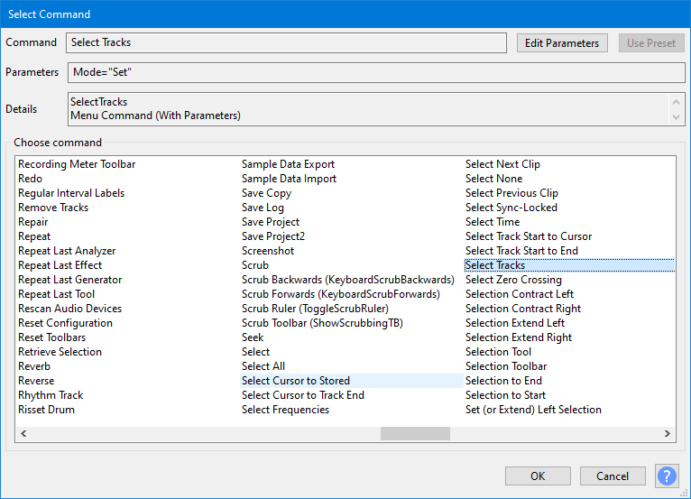
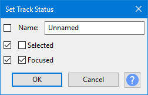
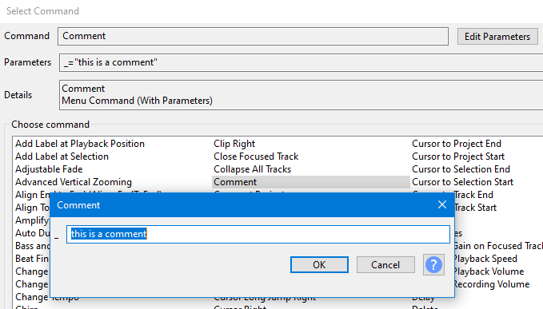

Manage Macros
Macros may be applied to either the entirety of the current project or to a selection of files using the command.
It is possible to use Noise Reduction in Macros but see Noise Reduction Tips for how the Noise Profile is captured.
| The full list of all Macro commands, with descriptions, is available at Scripting Reference. |
Contents
- Accessing Macros
- Select a Macro
- Edit Steps in the Macro
- The buttons
- Macros Examples
- Error: Batch command not recognized
| It is strongly recommended that you set parameters for the commands that you use in a Macro.
Otherwise Audacity will use the last-used parameter setting(s) when you ran the effect(s) manually. Also note carefully that settings used in Macros will not affect or change the last-used parameter settings for any effect when next run manually. Basically to paraphrase: "What happens in Macros stays in Macros". |
Accessing Macros
- Accessed by:
- The menu , OR
- Using the button in the Macros Palette dialog.

Select Macro
Select Macro contains a list of already defined Macros. You can define the name of a new Macro and select which Macro is active.
The left hand box in the dialog (labeled Select Macro) contains a list of already defined Macros. Until you add a new Macro, it only has built-in "MP3 Conversion" and "Fade Ends" Macros.
Use left-click (or use the Up or Down keyboard arrows) to select the Macro you want to work on
- : Create and add a new Macro to the list.
- : Remove the selected Macro from the list - grayed out when the Macros that ship as part of Audacity are selected.
- : Rename the selected Macro - grayed out when the Macros that ship as part of Audacity are selected.
- : Resets any Audacity provided Macro to its default settings - grayed out when user-provided Macros are selected.
- : Enables you to import a Macro TXT file.
- : Exports the selected Macro to a TXT file.
Edit Steps in the Macro
Edit Steps lists the sequence of commands in order of first to last (End) for the Macro selected in the "Select Macros" box to left.
- The Macro can include a number of common Audacity functions and effects to be executed in any order you specify.
- To create an audio file as part of the Macro process you must include an "Export" command (such as Export as WAV).
- The Export command will use the settings you used that last time you used the same command from the menu command, or default settings if you have never used that command from the menu.
- In many cases the parameters for each command in the Macro can be specified within the Manage Macros dialog.
You can:
- Add or remove commands for the selected Macro
- Change the order in which the commands execute in the Macro
- Edit the parameters for some effects in the Macro
Command
- : Insert a new command into the list
- : Edit the parameters of the currently selected command
- : Delete the currently selected command in the list
- : Move the currently selected command up in the list
- : Move the currently selected command down in the list
- : This button is only active when you have made edits to a Macro. It enables you to save those changes.
Editing an existing command
To edit an existing command double-click it, or use the Up or Down keyboard arrow to select it then press Space. The parameter settings dialog for that command will be displayed.
Inserting a new command
To insert a new command in a Macro, left-click or use the Up or Down keyboard arrow to select an existing command. The new command to be inserted will be placed above this selected command. Then press .
- The "Select Command" dialog appears, listing all the available commands. Double-click a command from the list to insert it in the "Command" box, as shown in the image below after inserting "Normalize".
- Alternatively, use the Up or Down keyboard arrow to select the command, then press Space.
| After clicking on any of the command entries you can type the first letter or first few letters of the command you want to select. |
- 
- Some 'scriptable' commands are particularly useful for Macros. See these pages for details:
- Extra Menu: Scriptables I - most commonly useful scriptables.
- Extra Menu: Scriptables II - less commonly useful scriptables, but also including Select and Set Track, which combine functionality of several scriptables.
- If the command has editable parameters, the button will be active. Clicking this button will bring up the dialog box for the effect where you can set the parameters as if you were applying the standalone effect.
- If you have previously created user presets for an effect you can use the to select one for use with that effect in the Macro.
- Choose in the effect dialog to accept the parameters you entered, or to revert to the default parameters.
- Choose in the "Select Command" dialog to add the command to the Macro.
Macro Command Parameters
| It is strongly recommended that you set parameters for the commands that you use in a Macro.
Otherwise Audacity will use the last-used parameter setting(s) when you ran the effect(s) manually. Also note carefully that settings used in Macros will not affect or change the last-used parameter settings for any effect when next run manually. |
- 
Commands that call Effects, Generators, Analyzers or Tools, use the same familiar graphical interface (GUI) as appears when they are used from the normal top level menus.
Many of the other commands provide a simple GUI comprised of checkboxes and text entry boxes. Typical examples can be seen in the Scriptables I and Scriptables II menus.
This example shows the "Set Track Status" command.
- The tick boxes on the left determines whether a feature should be used. When not selected, that feature does nothing.
- The second tick box determines whether the feature is set to "on" or "off".
This shows:
- The track name will not be changed
- Track selectedness will be set to "not selected"
- Track focus will be set to "focused"
Selections in Macros applied to Project
Macros will work on pre-existing selections you make in your project prior to running the Macro. But the selection can be over-ridden by your Macro itself as there are Macro commands available to effect selections in the audio.
- In particular All(Select All) will select the entire project
- Select which is parameterizable (see the provided Fade Ends Macro for an example where the first and last one seconds of the audio are selected for the fades).
| If you want to select all tracks, maintaining your current time selection, use "Select: First=0 Last=100". It will not waste time twiddling its thumbs on the tracks that are not there. |
Selections in Macros applied to Files
When applying a Macro to files there is no pre-existing selection so you will need to create a selection in the Macro if your Macro requires audio to be selected to act on (and most Macros do).
Commands for Exporting audio files
- There are four basic export commands available: Export as WAV, Export as MP3, Export as FLAC and Export as Ogg.
- See Apply Macro for details of naming and location of exported files.
| Parameters for export formats cannot be set in "Manage Macros". To configure export parameters for the Macro, click to access the Export Audio Dialog, click , set the parameters, press then the export. An audio track must be on screen in order to open the Export Audio Dialog. |
Special Export command
- Export2: there is also a special Export command Export2 which enables you to export to a specific target file and format. When using Export2 you have to give the full file name (including path and filename extension).
Note carefully that the filename is not dynamically changeable when running the Macro, once set in the Export2 parameters, so you may wish to create several Macros the Export2 each targeting different file locations, names and filetype.
Example:
"C:\Users\<username>\Desktop\my file.flac" (this works)
Not: C:\Users\<username>\Desktop\my file.flac (the file name is not quoted)
Not: "my file.flac" (no path given)
Not: "C:\Users\<username>\Desktop\myfile" (no file extension)
The quote marks around the file pathing are supplied by Audacity once the Export2 command has been edited in setting up or editing the Macro
When entering the pathing data in the edit parameters dialog for the command you do not put the quote marks for example: C:\Users\<username>\Desktop\my file.flac
Comments in Macros
Comments be added to Macros to enable you to document what is happening in the Macro.
Use the "Comment" command in the Macros command to set and edit its parameters to type the text of your comment.
- 
The buttons
Shrink - reduced Macros Palette dialog
Use the button to show a reduced Macros Palette dialog with a simple list of the existing Macros, enabling you to apply the Macros but not edit them.
This smaller version is useful for presets. It stays open after applying a macro, so it is a palette of custom functions, and you can pick another and apply that.
Using the button on this reduced dialog will return you to the full Manage Macros dialog.
For more details see the Apply Macro page.
Apply Macro to
Apply Macro to enables you to make a Macro operate on either your current open or a set of selected external .
| It is recommended not to process more than 500 files at a time. |
See Macros Palette for details of how these two buttons operate.
Close to exit the dialog
To dismiss the dialog simply click on the button.
If there any unsaved changes you will be asked if you want to save them or not.
Macros Examples
See the Macros Examples page for examples of using Macros.
Error: Batch command not recognized
- any command in the Macro uses a different text format than that recognized by the version of Audacity in use
- any plugins listed in the Macro are missing, in an incorrect location or are incompatible with the version of Audacity in use.